여행자여
STARRY TAROT
별빛타로
인스타그램과 AI 타로사이트를 활용한 온라인 전도도구
QUESTION
부녀회, 그리고
강동교회 전체가
당면한 과제는?
3040
1020
3040
5060
60+
핵심 과제
차세대 성장 동력인
3040 비중이 낮습니다.
왜 그럴까?
왜 그럴까?
3040을 전도할 핵심 인력인
3040의 활동률이 낮다
3040의 활동률이 낮다
왜 그럴까?
3040 활동률 저하
전면에 나서기 어려운 세대
관계망과 사회생활 안에서 조심스러움
왜 그럴까?
3040 활동률 저하
전면에 나서기 어려운 세대
관계망과 사회생활 안에서 조심스러움
생업과 가정으로 전도 시간 확보가 어려움
일상과 돌봄이 겹쳐 실제 시간을 내기 어려움
그래서 우리는
고민했습니다.
좌판전도
지인전도
좌판전도
지인전도
좌판전도
지인전도
찾기의 자동화
대상자가 자동 유입되는 구조
+
인스타그램과 AI 타로사이트를 활용한
온라인 전도도구
별빛타로
온라인전도 파이프라인
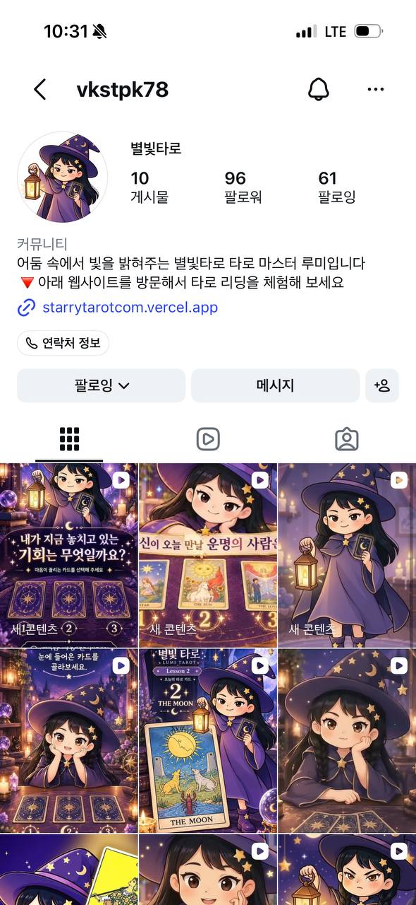
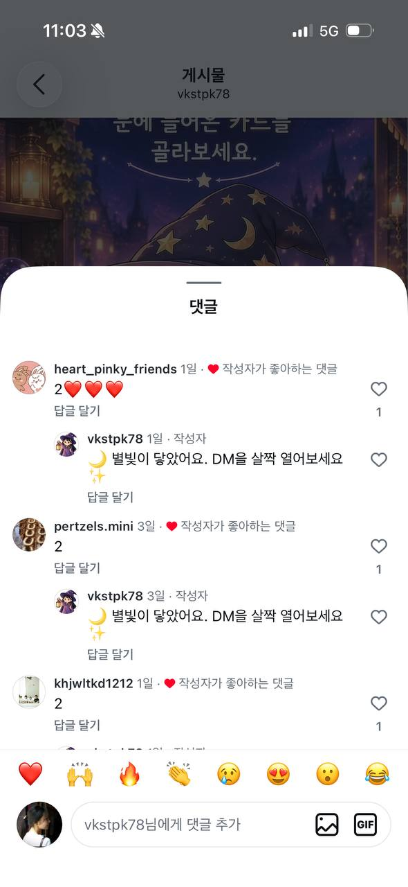
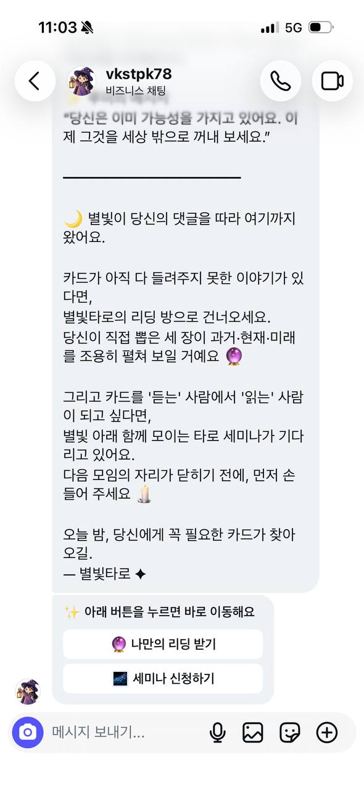
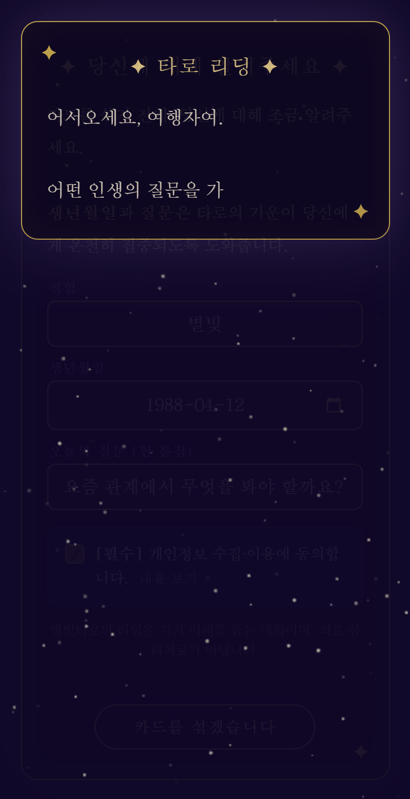
릴스 콘텐츠로 자연스럽게 유입
댓글 키워드 → 자동 DM으로 사이트 안내
세미나 정보까지 바로 연결
알고리즘 분석과 광고로 찾기 확장
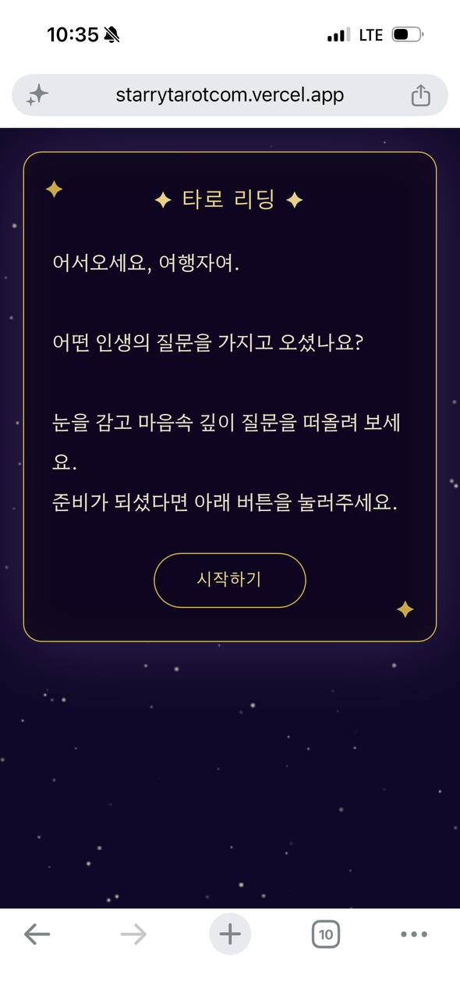
별빛타로첫 화면
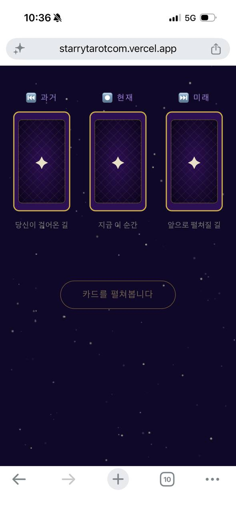
질문 입력이름·생년월일·고민
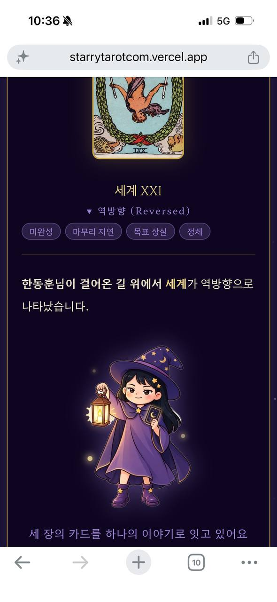
카드 선택관심이 행동으로 바뀌는 순간
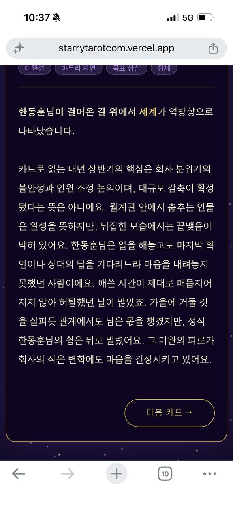
AI 리딩내 이야기처럼 읽히는 결과
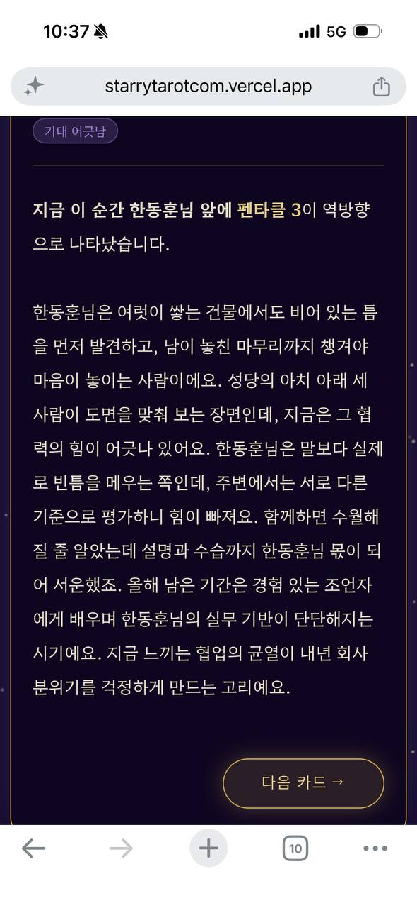
카톡 상담1:1 대화로 이동
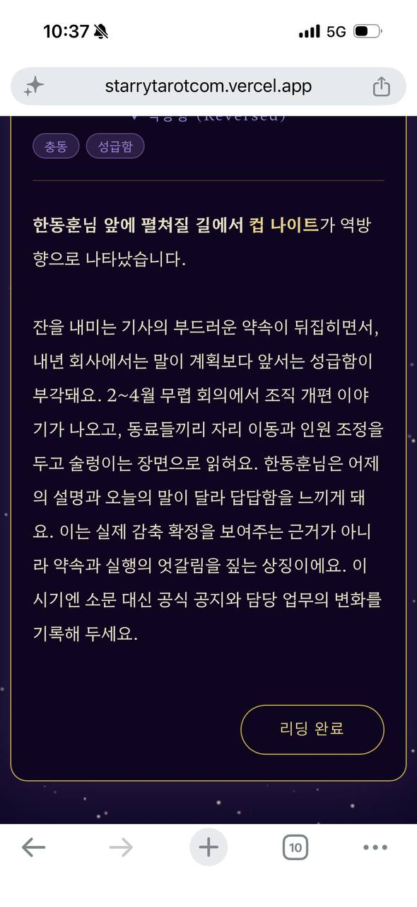
세미나 신청밤 카페 모임으로 연결
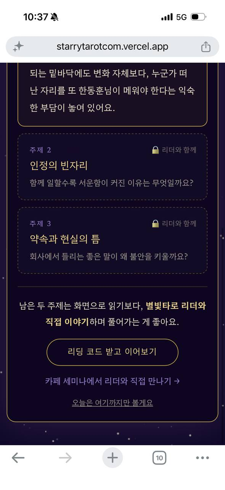
신청 완료관리사이트에 기록
타로리딩사이트 : 대상자의 문제에 대해
실제 타로 리딩 결과를 주어 해결책을 제시
AI 리딩타로 결과 화면
1:1 상담 연결
AI 리딩타로 결과 화면
1:1 상담 연결
타로 결과 확인
카톡 상담 연결
타로 Reader와 연결
AI 리딩타로 결과 화면
1:1 상담 연결
타로 결과 확인
카톡 상담 연결
타로 Reader와 연결
세미나 연결
AI 리딩타로 결과 화면
1:1 상담 연결
타로 결과 확인
카톡 상담 연결
타로 Reader와 연결
세미나 연결
사이트 신청
세미나
타로 Reader와 연결
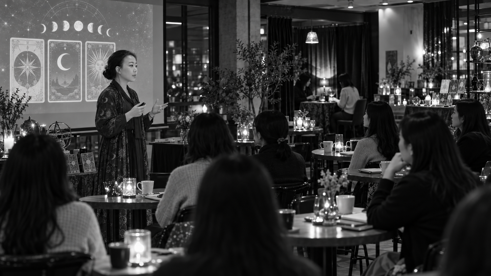
별빛타로의
세미나 구성
대상자가 직접 사이트에서 신청하는 구조
밤에 진행되는 신비한 분위기 컨셉
굿즈 판매로 세미나 명분 형성
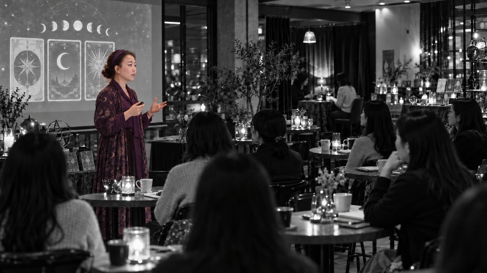
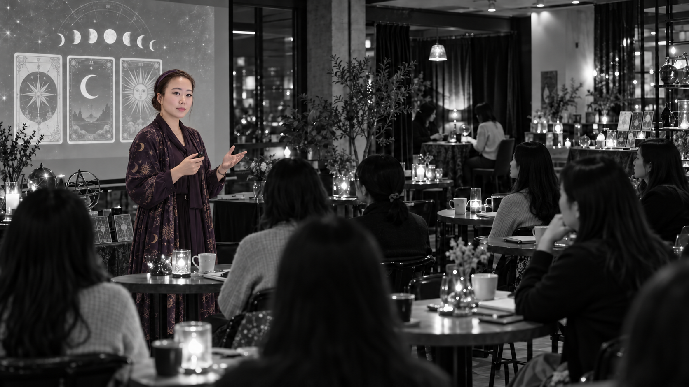
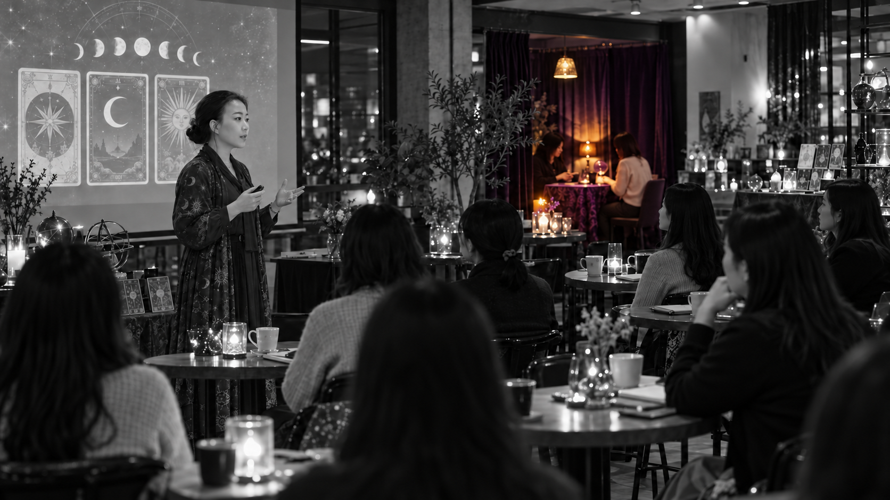
타로 Reader
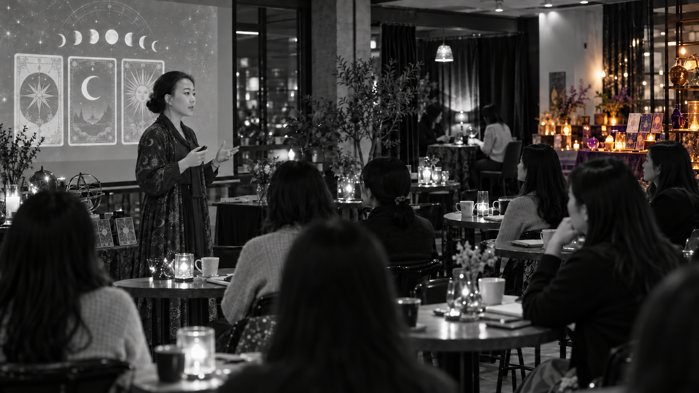
굿즈존
별빛타로 파이프라인의
실질 파워
3040부서와의 긴밀한 협업 라인
구축 완료
기존 타로인스타그램 마케팅 전략 분석
알고리즘을 타는 게시물의 특성 분석
=> 게시물의 업로드 시간, 배경 음악, 콘텐츠 내용 등 세밀하게 조정하며 관리 중
현재, 광고 없이 800 조회수 및 댓글 수 30개가 넘었던 콘텐츠도 존재
=> 1만원의 광고테스트 후 조회수 3배상승 확인 : 찾기수에 대한 기대감 증폭
3만 조회릴스 노출
댓글 300키워드 반응 1%
연락처 8DM·사이트 전환
참석 3상담·세미나
매칭 1멘토·교관 연결
근거: 실제 릴스 테스트값과 온라인 마케팅 퍼널의 일반 전환율을 기준으로 한 보수 추정치입니다.
별빛타로
온라인찾기 자동화
3040 전면 부담감소
AI 타로 콘텐츠유입
1:1 상담·세미나연결
관리사이트로흐름 추적
3040협업형 운영
별빛타로 사이트
starrytarotcom.vercel.app